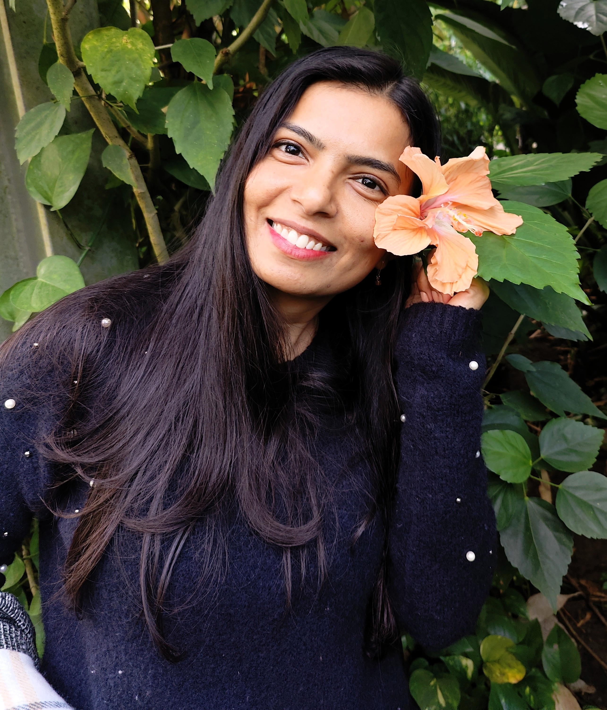

Bioinformatics MSc student at Deggendorf Institute of Technology with hands-on experience in LFQ proteomics, differential expression analysis, and pathway enrichment using Python and R. Skilled in building reproducible omics pipelines and interpreting multi-condition biological datasets.
Published researcher seeking a Master's thesis position in computational proteomics and space biology, with strong interest in cytoskeletal dynamics, neuronal stress responses, and neuromuscular adaptation.
Python (Pandas, NumPy, SciPy, gseapy), R (limma, DESeq2, ggplot2), Bash/Linux
MaxQuant LFQ, Perseus-style imputation, FastQC, Cutadapt, STAR, featureCounts, Snakemake
Differential expression, pathway enrichment (GO, KEGG, Reactome), PPI networks, FDR correction, PCA
Matplotlib, Seaborn, Plotly, Streamlit
Git/GitHub, VS Code, Microsoft Office
English (C1) · German (B1)
Focus: RNA-Seq analysis, NGS data processing, R & Python programming, workflow automation
Laboratory and genomics-related research in microbiology, cytogenetics, and evolutionary biology
Thesis published as a scientific book
Germany — Open to thesis & research collaborations